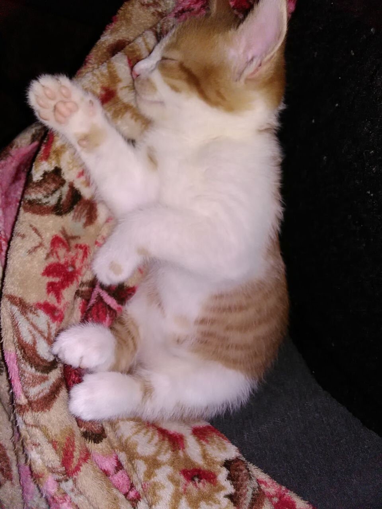
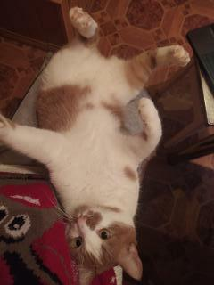

Блог успешного котика
Знакомство
Приветствую тебя, мой пушистый друг! Меня зовут Винстон и я расскажу тебе как я проделал путь от маленького безпородного комочка до успешного котика!

Я родился в большой семье. У меня было 4 мелких соперников за мамину ласку. Я с самого детства привык добиваться своего своими силами. Я был очень маленьким но имел сверхсилу - огромные лапки и обаяние. Благодаря этому мои новые лысые родители не раздумывая взяли меня к себе и влюбились до безумия. В самую первую секунду как они меня увидели - они проиграли, стало сразу ясно кто будет главный в их доме. Запомни! Ты и только ты можешь помыкать ими как будет душе угодно и строить свою жизнь по четкому пушистому плану.
Лайфхаки от успешного котика
Итак приступим.
- Первое и главное - требуй вкусняшки постоянно. После прессинга кожанные так или иначе сдадуться и дадут вкусную еду. Ешь с аппетитом дабы порадовать их. Пусть думают что твойй рацион под их контролем. Все мы знаем правду.
- Будь милым котиком. Иногда позволяй человекам почувствовать какой ты пушистый. Но дозируй, не давай себя гладить каждый рад как они подойдут.
- Помни, у тебя есть козырь - пузико. Если твои рабы достаточно втерлись в доверие - можешь дать им погладить пузико. Гарантирую, они будут в восторге. Так же это незаменимая техника атаки. Ты падаешь на спину и ждешь когда наивные люди подойдут погладить тебя. Выжидаешь пару секунд и всемя четырмя лапками впиваешся в руку. Вот он момент доминации! Их лица будут полны обескураженности.

Наставления успешного котика
Ну что ж, мой пушистый товарищ, на этом мой вводный урок подходит к концу. Чтобы стать успешным котиком нужно не много - помнить что ты самый красивый, самый умный и самый удивительный. Не прекращай дрессировать своих людей. Верь в себя и свою пушистость!

Бонус от успешного котика - пример презрительного взгляда когда убираю твой лоток. Пользуйся!